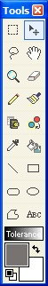
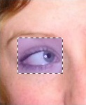
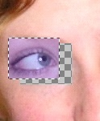

Move Selected Pixels Tool
|  The Move Selected Pixels Tool (Tools-->Move Selected Pixels) can move any number of selection regions on the current layer. Just have a selection region already active using the Rectangle, Ellipse, Magic Wand, or Lasso Selection Tool, and then click and drag. That will move the selected region to any new location on the active layer.
|
|  The picture to the left is a region currently selected with the Rectangle Selection Tool.
|
|  This is the result of using the Move Tool on the selected region. |
| Important: When you move a selection that is on the background layer, what is left behind is transparency. This is represented by a checkered pattern |